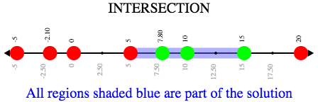
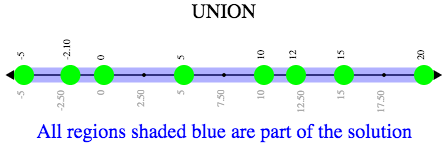
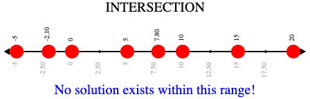
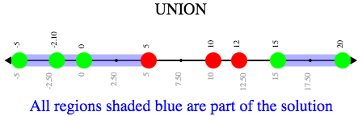

Compound Inequalities: Solutions & Non-Solutions
(Also available in Pyret)
Students build upon their understanding of Booleans and simple inequalities to compose compound inequalities using the concepts of union and intersection.
|
Lesson Goals |
Students will be able to:
|
|
Student-Facing Lesson Goals |
|
|
Materials |
|
compound inequality-
an inequality that combines two simple inequalities using and or or
function-
a relation from a set of inputs to a set of possible outputs, where each input is related to exactly one output
intersection-
the set of values that makes both inequalities true
union-
the set of values that makes either or both of a set of inequalities true
🔗Introducing Compound Inequalities
Overview
Students consider the need to compose inequalities, and think about how to write them.
Launch
We use inequalities for lots of things:
-
Is it hot out? (temperature > 80°)
-
Did I get paid enough for painting that fence? (paid \ge $100)
-
Are the cookies finished baking? (timer = 0)
What other examples can you come up with?
Many times we need to combine inequalities:
-
Should I go to the beach? (temperature > 80° and weather = "sunny")
-
Was this burrito worth the price? (taste = "delicious" and price ≤ $15)
Can you think of examples of when we might want to combine inequalities?
Guide students through other examples of and and or with various statements, such as:
-
"I’m wearing a red shirt AND I’m a math teacher, true or false?"
-
"I’m an NBA basketball star OR I’m having pizza for lunch, true or false?"
This can make for a good sit-down, stand-up activity, where students take turns saying compound Boolean statements and everyone stands if that statement is true for them.
Investigate
Both mathematics and programming have ways of combining - or composing - inequalities.
Complete Converting Circles of Evaluation to Code and Compound Inequalities — Practice.
Synthesize
Be really careful to check for understanding here.
-
Expressions using
andonly producetrueif both of their sub-expressions aretrue. -
Expressions using
orproducetrueif either of their sub-expressions aretrue.
Strategies for English Language Learners When describing compound inequalities, be careful not to use "English shortcuts". For example, we might say "I am holding a marker and an eraser" instead of "I am holding a marker and I am holding an eraser." These sentences mean the same thing, but the first one obscures the fact that "and" joins two complete phrases. For ELL/ESL students, this is unecessarily adds to cognitive load! |
🔗Solutions and Non-Solutions of Compound Inequalities
Launch
The questions below could be printed from Compound Inequality Warmup.
-
What are 4 solutions for x > 5 ?
-
Possible answers: 5.001, 1000, 24, 73.26
-
-
What are 4 non-solutions for x > 5?
-
Possible answers: 5, -1000, 4.9, 0
-
-
What are 4 solutions for x \le 15?
-
Possible answers: 15, 14.98, -63, 1/2
-
-
What are 4 non-solutions for x \le 15?
-
Possible answers: 15.1, 25, 2022, 1000000
-
-
What numbers are in the solutions set of x > 5
andx \le 15, making both of these inequalities true?-
Possible answers: 5.001, 10, 12.374, 15
-
-
How would that be different from the solution set of x > 5
orx \le 15, making at least one of these inequalities true?-
All real numbers are a part of the solution set for x > 5
orx \le 15 because there aren’t any numbers that don’t satisfy at least one of these expressions.
-
Investigate
-
Open the Compound Inequalities Starter File.
-
Click "Run" to see the graphs you’ve just considered.
When students click "Run", four graphs will appear. The top two are the simple inequalities they’ve just discussed. Encourage students to verify that their solutions and non-solutions are correct. Explain that the bottom two graphs are produced by the special functions and-intersection and or-union. Use the discussion questions below as a jumping off point in guiding students' analysis of the starter file. These questions could also be printed from Exploring Compound Inequality.
-
What does
and-intersectiondo?-
It takes in two functions and a list of numbers and produces a graph with the points and the shaded intersection of values that make both of the inequalities true.
-

{kind=link}
-
Why is the circle on 5 red and the circle on 15 green?
-
Because 5 is not part of the solution - it’s not bigger than itself. And 15 is part of the solution - it’s less than or equal to 15.
-
-
Do you think every graph made with
and-intersectionwill have different color dots at the ends? Why or why not?-
No. It will depend on whether or not the inequality symbols include an equal sign. Sometimes one will and one won’t. Sometimes neither will. Sometimes both will.
-
-
What does
or-uniondo?-
It takes in two functions and a list of numbers and produces a graph with the points and the shaded union of values that make either or both of the inequalities true.
-

{kind=link}
-
Why did the graph of this
or-unionresult in the whole number line being shaded blue?-
Because in order to make an
orstatement true, a number only has to make one of the inequalities true. Every number in the universe is either greater than 5 or less than or equal to 15. There aren’t any non-solutions!
-
-
Not all graphs of
or-unionwill look like this. Can you think of a pair of inequalities whose union won’t shade the whole graph?-
Answers will vary! x < 1 or x < 3
-
Change the function definition on line 8 to x < 5 and the definition on line 9 to x \ge 15 and, before you click "Run", take a moment to think about what the new graphs of and-intersection and or-union will look like. Then click "Run" and take a look.
-
What does the new
and-intersectiongraph look like?-
We see a graph with only red circles, representing non-solutions, as below. None of the graph will be shaded blue, because there aren’t any numbers that are both smaller than 5 and greater than or equal to 15. A message will tell us that no solutions exist in the provided range.

🖼Show image
-
-
What does the new
or-uniongraph look like?-
There’s an arrow to the left and an arrow to the right with a break in the middle between 5 and 15! The dot for 5 is red because it’s not part of the solution. The dot for 15 is green because it’s part of the solution.

🖼Show image
-
-
Why is the dot for 5 red and the dot for 15 green?
-
The dot for 5 is red because it’s not part of the solution. The dot for 15 is green because it’s part of the solution.
-
-
Which of the 8 numbers from the list are part of the solution set? How do you know?
-
-5, -2.1, 0, 15, 20… the circles are green.
-
-
Is 3 part of the solution set? How do you know?
-
Yes. It’s in the blue shaded region.
-
-
Is 10 part of the solution set? How do you know?
-
No. It’s in the unshaded area.
-
{kind=link}
{kind=link}
Once students are familiar with the starter file, they are ready to use it as they practice identifying solutions and non-solutions for compound inequalities.
-
Explore the compound inequalities listed using the Compound Inequalities Starter File, identifying solutions and non-solutions for each.
Explain to students that instead of defining two functions as simple inequalities, we can produce an inequality graph by defining one function to be a compound inequality! In the following activity, students will analyze inequality graphs and define a single function that produces the graph. Walk students through the completed first example before they attempt to write this code on their own.
-
Turn to Compound Inequality Functions.
-
Write code to describe the compound inequalities pictured.
Synthesize
-
How did the graphs of intersections and unions differ?
🔗Additional Exercises:
These materials were developed partly through support of the National Science Foundation,
(awards 1042210, 1535276, 1648684, and 1738598).  Bootstrap by the Bootstrap Community is licensed under a Creative Commons 4.0 Unported License. This license does not grant permission to run training or professional development. Offering training or professional development with materials substantially derived from Bootstrap must be approved in writing by a Bootstrap Director. Permissions beyond the scope of this license, such as to run training, may be available by contacting contact@BootstrapWorld.org.
Bootstrap by the Bootstrap Community is licensed under a Creative Commons 4.0 Unported License. This license does not grant permission to run training or professional development. Offering training or professional development with materials substantially derived from Bootstrap must be approved in writing by a Bootstrap Director. Permissions beyond the scope of this license, such as to run training, may be available by contacting contact@BootstrapWorld.org.